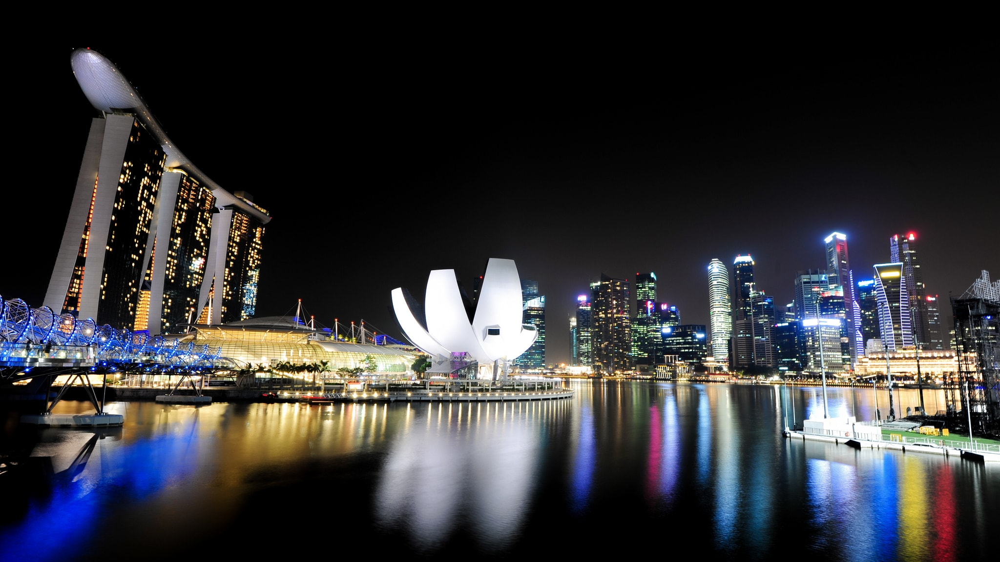

Singapore
I visited here Decenber 2017
There’s so much variety on offer here and you’ll struggle to get bored with the amazing delicious choices available across Singapore.It’s also quite cheap so there’s that too!Singapore boasts of featuring one of the most fun-filled adventure parks in the world. With adrenaline rushing rides and different world-famous themes, the universal studios Singapore has excelled in attracting tourists from all over the world. This park has 24 major rides along with 7 themed zones.The Night Safari in Singapore opens its shutter post the dusk falls and welcomes you in a thrilling world of nocturnal species and their lowly-lit homes. This Singapore tourist place is the world’s first-night safari park, Night Safari is one of the must-visit tourist places to visit in Singapore.Counted among the most brilliant creations of humankind in the entirety of Singapore, SEA Aquarium is a large aquarium housing more than 1,000 species of marine life including hammerhead sharks, bottlenose dolphins, and rays. Across a total of 49 habitats, 1,00,000 aquatic animals are put on display for visitors, making this aquarium one of the top places to see in Singapore for marine life enthusiasts.Jurong Bird Park is home to some around 5000 birds from about 400 species, and spreads across 20.2 hectares, hushed away in the western part of Singapore, besides being one of the finest and must-visit places to visit in Singapore.Singapore zoo is listed among the top Singapore tourist places due to its featuring unique and wide varieties of animals. But Singapore zoo isn’t just an ordinary zoo, but way more than that. Singapore zoo comprises one main branch that showcases the wild diversity and other three branches that features wild jungle safari, night safari, and Jurong Bird Park.